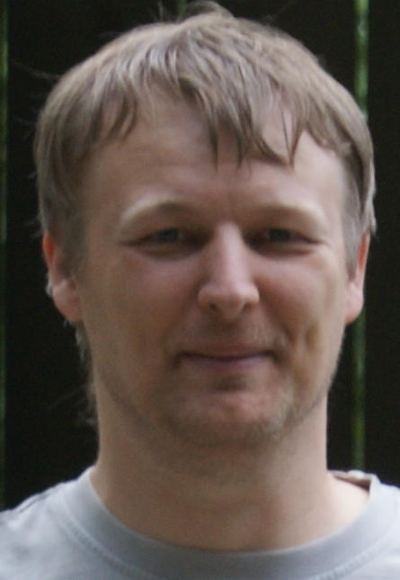
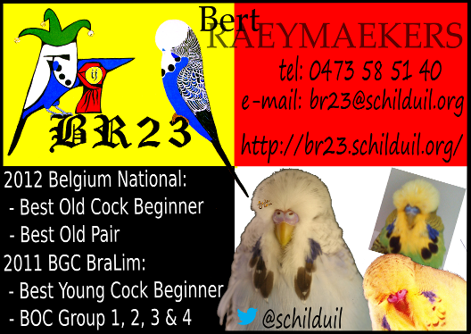

BR23 Budgerigar Stud
Latest updates
11 DEC 2014: More pictures of the chicks added yesterday evening.
08 NOV 2014: Lots of pictures added from the start of the 2015 season.
22 MAY 2014: Lots of pictures added in the gallery and also a few shows.
Welcome on the BR23 site!
About the exibition budgerigars of Bert Raeymaekers.
Exhibition status: beginner
For mutations circulating in my stud see Mutations/Colours
If you want to find out what I have won you can look in the trophy room or in the show results.
For more information about genetics you can have a look on my other site: http://www.schilduil.org/
Bert

http://